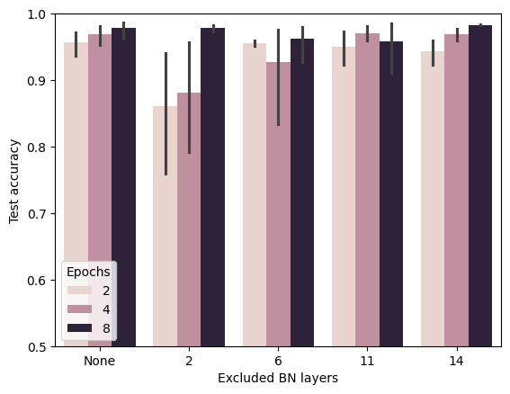
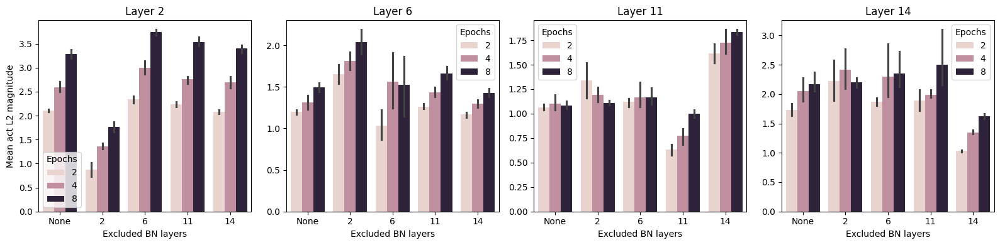
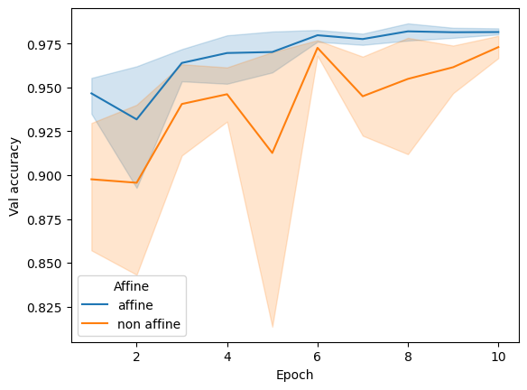
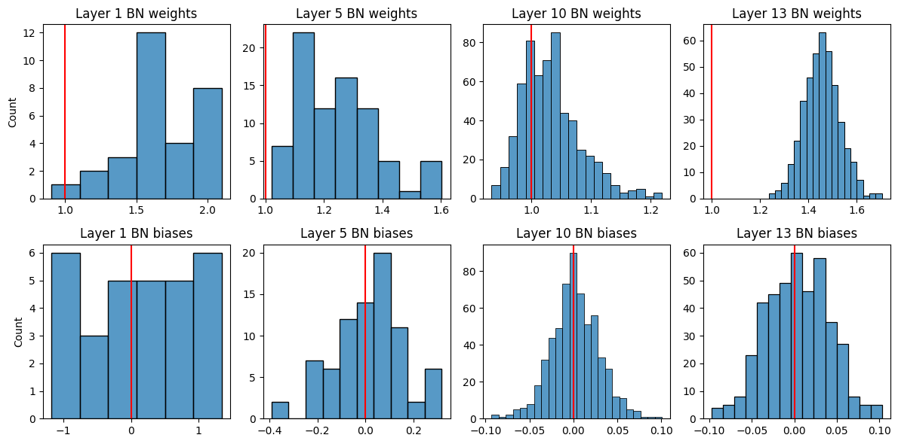
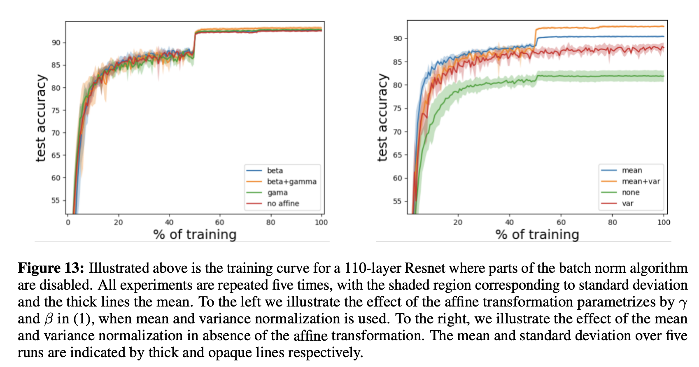

Where I attempt to solve the exercises in section 8.5 of the d2l book from scratch in pytorch (without using the d2l library).
Imports
try:import matplotlib.pyplot as pltexcept:!pip3 install matplotlibimport matplotlib.pyplot as pltimport torchimport torch.nn as nnimport torch.optim as optimfrom torchvision import datasets, transformsfrom torch.utils.data import DataLoader, Datasetfrom PIL import Imageimport numpy as npimport pandas as pdimport seaborn as snsimport matplotlib.pyplot as pltimport os, itertools, time, randomdevice ='cpu'
Context
The section introduces how to implement batch norm (BN) and some of the intuitions behind its effectiveness.
As a quick recap, batch norm layers apply the following transform to their inputs:
Where \(\gamma\), \(\beta\) are learned and \(\mu_B\), \(\sigma_B\) are estimated using the input’s minibatch \(B\) during training.
I.e. batch norm first normalizes the input to have mean \(0\) and std \(1\), facilitating convergence during optimization.
However, since BN is typically applied before activation (at least traditionally), doing so will reduce the expressive power of the layer. For instance, as pointed out by the original paper, “normalizing the inputs of a sigmoid would constrain them to the linear regime of the nonlinearity.” Below, we plot a sigmoid and note that in the [-1, 1] range (where most of the normalized data would fall) it is essentially linear.
So to maintain the layer’s expressive power (degrees of freedom), “we make sure that the transformation inserted in the network can represent the identity transform” and introduce \(\gamma\) and \(\beta\). So if it is optimal to leave the input unchanged, the network can learn to do so by setting \(\gamma = \sigma_B(x)\) and \(\beta = \bar x_B\). (This part was confusing as the section only mentions: “Next, we apply a scale coefficient and an offset to recover the lost degrees of freedom” - the paper provided clarification).
Finally, the second reason batch norm seems to help is the implicit regularization it provides by injecting noise into the training process. What noise? \(\hat \mu_B\) and \(\hat \sigma_B\) are (noisy) estimates calculated on a sample (the minibatch). Thus, the size of the minibatch \(|B|\) plays an important role: too small and the estimates are too high variance; too big and the estimates become too stable (noiseless).
Anyway, let’s get to the exercises.
Q1
Should we remove the bias parameter from the fully connected layer or the convolutional layer before the batch normalization? Why?
I believe we could remove the bias parameter from both the fully connected and convolution layers if BN is applied as described in the section: right after the fully connected / convolution layer but before the activation \(\phi\). Why? essentially BN is location invariant because it centers the minibatch at 0:
Thus in the fully connected layer case: \[
\boldsymbol h = \phi(BN_{\gamma, \beta}(\boldsymbol{Wx + b})) = \phi(BN_{\gamma, \beta'}(\boldsymbol{Wx}))
\]
In convolution layers, we apply BN per channel, across all locations. I.e. “each channel has its own scale and shift parameters, both of which are scalars”. And since the convolution layer also outputs a scalar bias per channel, a similar argument applies.
But should we remove the biases? Yes. We get the same expressive power with fewer params.
Let’s try it out empirically on MNIST by training the BNLeNet network defined in the section, removing bias on linear and convolution layers, in turn. Although we’ll not get the same learned parameters (\(\beta \to \beta'\)), we should get comparable performance.
And we observe that applying batch norm helps early training (we achieve better performance earlier) and makes training more robust to learning rate selection.
Understanding Batch Normalization poses that batch norm’s main benefit is that it allows for greater learning rates by containing activation blowup (especially in later layers), which in turn biases the optimization to “flatter” minimas with better generalization.
It seems our small experiment aligns with the paper, even though our network is quite shallow.
Q3
Do we need batch normalization in every layer? Experiment with it.
The paper demonstrates that it is more beneficial in later layers. Let’s see if it is in our case and remove each batch norm layer in turn. We logged test accuracies and activations and tested 5 nets per configuration.
Redefine the model
class BNLeNet(nn.Module):def__init__(self, num_classes =10, ex_bn_layers = []):# ex_bn_layers: list of BN layers to exclude (1, ..., 4)super().__init__()for i in ex_bn_layers: assert i inrange(1, 5), 'There are only 4 BN layers' layers = [ nn.LazyConv2d(6, kernel_size=5), nn.LazyBatchNorm2d(), nn.Sigmoid(), nn.AvgPool2d(kernel_size=2, stride=2), nn.LazyConv2d(16, kernel_size=5), nn.LazyBatchNorm2d(), nn.Sigmoid(), nn.AvgPool2d(kernel_size=2, stride=2), nn.Flatten(), nn.LazyLinear(120), nn.LazyBatchNorm1d(), nn.Sigmoid(), nn.LazyLinear(84), nn.LazyBatchNorm1d(), nn.Sigmoid(), nn.LazyLinear(num_classes) ] bn_idx = [i for i, module inenumerate(layers) if'BatchNorm'instr(module)]for i in ex_bn_layers: layers[bn_idx[i -1]] = nn.Identity()self.net = nn.Sequential(*layers)def forward(self, x):returnself.net(x)
Train and evaluate
train_loader = DataLoader(training_data, batch_size =128, shuffle =True)test_loader = DataLoader(testing_data, batch_size =128, shuffle =False)imgs, labels =next(iter(train_loader))ex_bn_layers = [[], [1], [2], [3], [4]]mag_layers = [2, 6, 11, 14]results = []for ex in ex_bn_layers:print(ex)for epochs in [2, 4, 8]:print(epochs)for i inrange(5): net = BNLeNet(ex_bn_layers = ex) test_accs = train(net, train_loader, test_loader, num_epochs = epochs, lr =0.1, verbose =False) tmp = {'Excluded BN layers': ex[0] if ex else0,'Epochs': epochs,'Test accuracy': test_accs[-1],'Iter': i }for lyr in mag_layers: sub = net.net[:lyr]with torch.no_grad(): mag = (sub(imgs) **2).mean() tmp[f'Mean mag at {lyr}'] = mag.item() results.append(tmp)
Does performance change?
Plot test accuracies
res = pd.DataFrame(results)res['Excluded BN layers'].replace({0: 'None', 1: '2', 2: '6', 3: '11', 4: '14'}, inplace =True)sns.barplot(data = res, x ='Excluded BN layers', y ='Test accuracy', hue ='Epochs')plt.ylim(0.5, 1)

It seems that removing the first batch norm (in the second layer) has the strongest hit on performance.
What about activations? Let’s plot the \(l_2\) norm of activations of layers that come right after batch norm layers for a single minibatch:
Plot mean magnitudes
f, axs = plt.subplots(1, 4, figsize=(16, 4))for i, lyr inenumerate(mag_layers): sns.barplot(data = res, x ='Excluded BN layers', y =f'Mean mag at {lyr}', ax = axs[i], hue='Epochs') axs[i].set_title(f'Layer {lyr}') axs[i].set_ylabel('')axs[0].set_ylabel('Mean act L2 magnitude')f.tight_layout()

We can definitely see an effect when we remove batch norm layers. In general, the activation magnitudes decrease in the removed layer. I.e. layer 2’s magnitudes when its batch norm is removed are lower than in the original network, and so on for the other layers. It also seems that other layers compensate for this decrease by increasing their magnitudes. Finally, as the paper points out, the effects appear stronger in early epochs.
Q4
Implement a “lite” version of batch normalization that only removes the mean, or alternatively one that only removes the variance. How does it behave?
We can freeze BatchNorm’s weight and bias params respectively:
Train and evaluate
for remove_mean, remove_var in [[True, True], [False, True], [True, False], [False, False]]:# All nets "see" the same data torch.manual_seed(0); np.random.seed(0); random.seed(0) g = torch.Generator() g.manual_seed(0) net = BNLeNet()for module in net.net:if'BatchNorm'instr(module):if remove_mean: module.bias.requires_grad =Falseif remove_var: module.weight.requires_grad =False train_loader = DataLoader(training_data, batch_size =128, shuffle =True, worker_init_fn = seed_worker, generator = g) test_accs = train(net, train_loader, test_loader, num_epochs =10, lr =0.1, verbose =False)print(f'Remove mean: {remove_mean} Remove var: {remove_var}\t\tfinal test acc: {test_accs[-1]}')
Remove mean: True Remove var: True final test acc: 0.9674
Remove mean: False Remove var: True final test acc: 0.9676
Remove mean: True Remove var: False final test acc: 0.9796
Remove mean: False Remove var: False final test acc: 0.98
It appears that only removing the variance has more of an effect in our case. Is this generally true? Haven’t found anything online yet.
Q5
Fix the parameters beta and gamma. Observe and analyze the results.
We can accomplish this by affine = False in BatchNorm layers.
results = {'affine': [], 'non affine': []}os.makedirs('nets', exist_ok =True)for affine in [True, False]: aff ='affine'if affine else'non affine'for seed inrange(5):# All nets "see" the same data torch.manual_seed(seed); np.random.seed(seed); random.seed(seed) g = torch.Generator() g.manual_seed(seed) net = BNLeNet(affine_bn = affine) train_loader = DataLoader(training_data, batch_size =128, shuffle =True, worker_init_fn = seed_worker, generator = g) test_accs = train(net, train_loader, test_loader, num_epochs =10, lr =0.1, verbose =False) results[aff].append(test_accs) torch.save(net, f'nets/{aff}_{seed}.pt')print(f'Affine: {affine}\t\tSeed: {seed}\t\tfinal test acc: {test_accs[-1]}')
Plot validation accuracies
tmp = []for aff, res in results.items():for i, test_accs inenumerate(res):for epoch, acc inenumerate(test_accs): tmp.append({'Affine': aff, 'Val accuracy': acc, 'Seed': i, 'Epoch': epoch +1})tmp = pd.DataFrame(tmp)sns.lineplot(data = tmp, x ='Epoch', y ='Val accuracy', hue ='Affine')

It seems performance is worse during early epochs but converges as training progresses. Let’s see the batch norm with affine=True layers learned weights and biases somewhat departed from their defaults (\(1\) and \(0\) respectively).
Plot weights and biases
layers = [1, 5, 10, 13]weights = {l:[] for l in layers}biases = {l:[] for l in layers}for fname in os.listdir('nets'):if'non'in fname: continue net = torch.load('nets/'+ fname)for layer in layers: weights[layer].extend(net.net[layer].weight.detach().tolist()) biases[layer].extend(net.net[layer].bias.detach().tolist())f, axs = plt.subplots(2, 4, figsize=(12, 6))for i, (layer, w) inenumerate(weights.items()): sns.histplot(w, ax = axs[0, i]) axs[0, i].set_title(f'Layer {layer} BN weights') axs[0, i].axvline(1, c ='r') sns.histplot(biases[layer], ax = axs[1, i]) axs[1, i].set_title(f'Layer {layer} BN biases') axs[1, i].axvline(0, c ='r')if i >0: axs[0, i].set_ylabel(''); axs[1, i].set_ylabel('')f.tight_layout()

It seems that they did, especially the weights.
Note: In Q4 and Q5 we removed various components of batch norm layers were removed and performance was compared. However, we used the same fixed learning rate \(0.1\) for all configurations. A more thorough analysis would have found the optimal learning rate for each configuration, as Appendix F of the paper does:

Q6
Can you replace dropout by batch normalization? How does the behavior change?
Q7
Research ideas: think of other normalization transforms that you can apply:
Can you apply the probability integral transform?
Can you use a full-rank covariance estimate? Why should you probably not do that?
Can you use other compact matrix variants (block-diagonal, low-displacement rank, Monarch, etc.)?
Does a sparsification compression act as a regularizer?
Are there other projections (e.g., convex cone, symmetry group-specific transforms) that you can use?